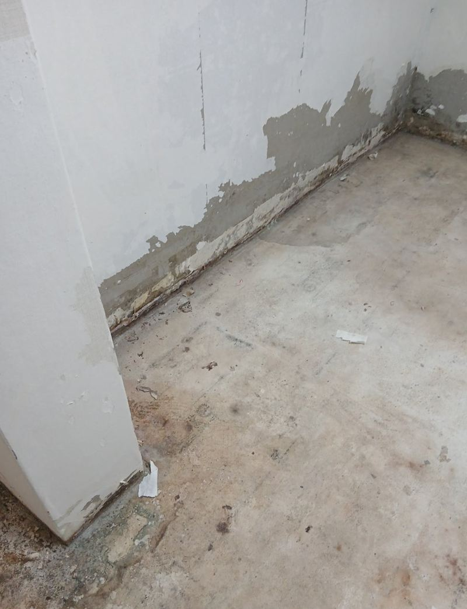
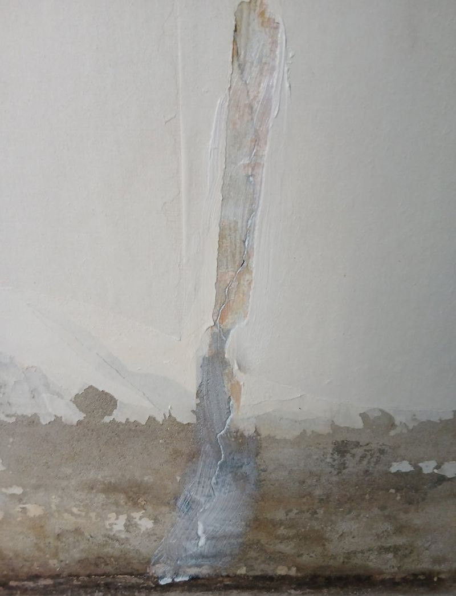
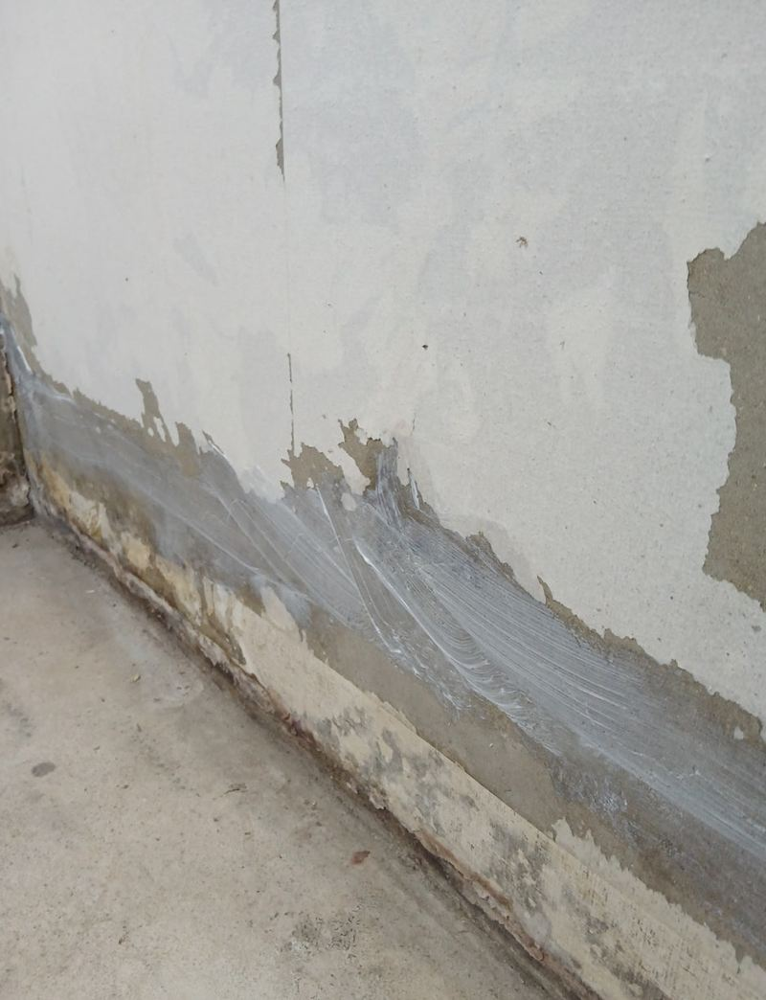
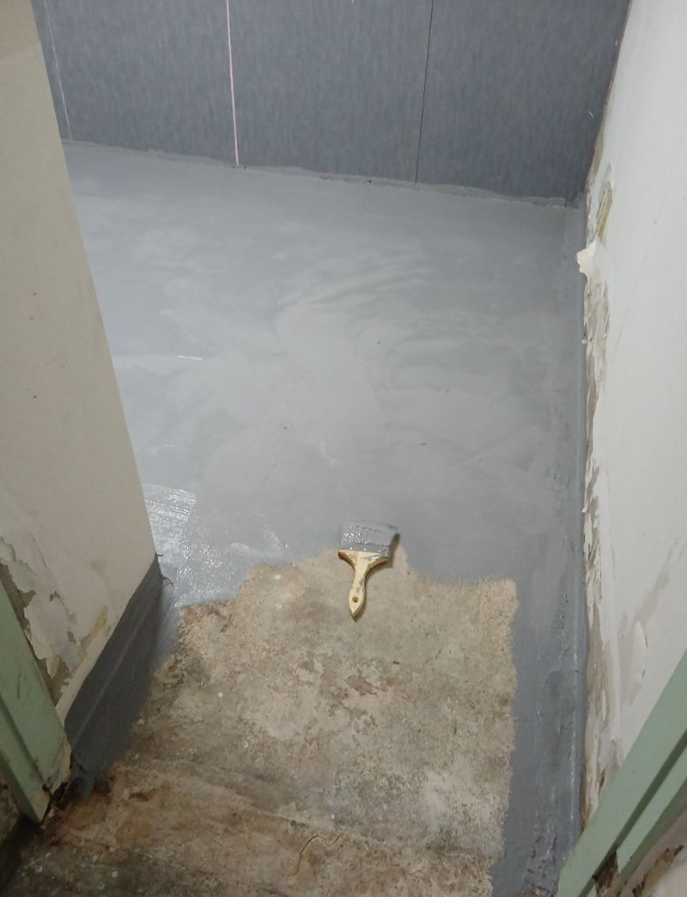
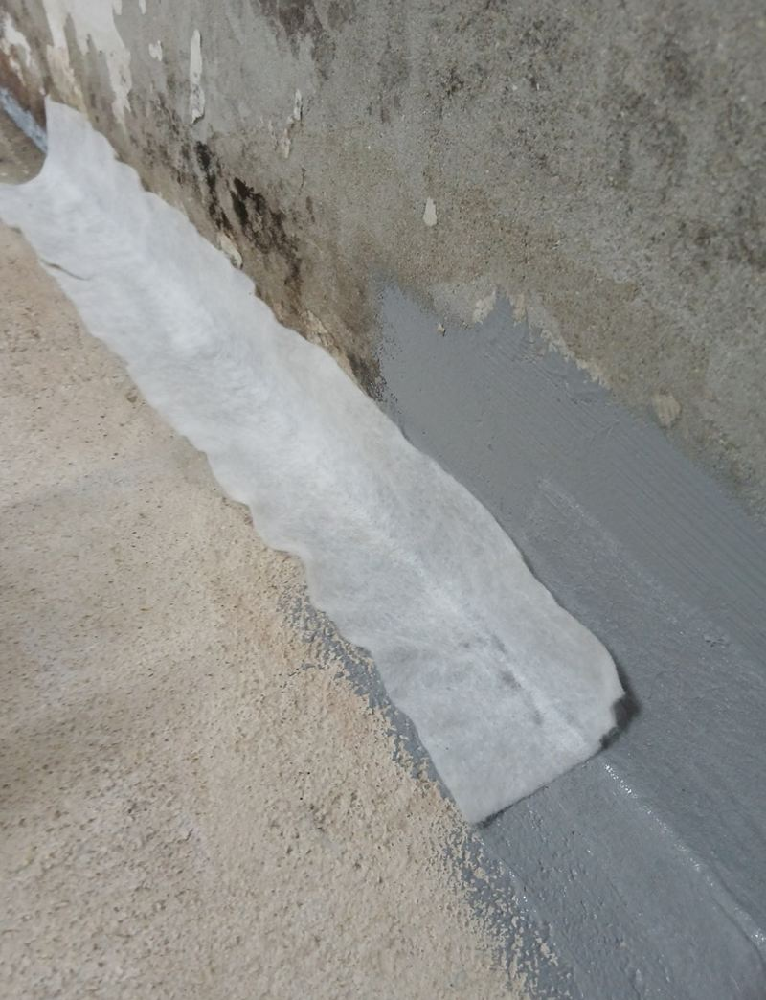
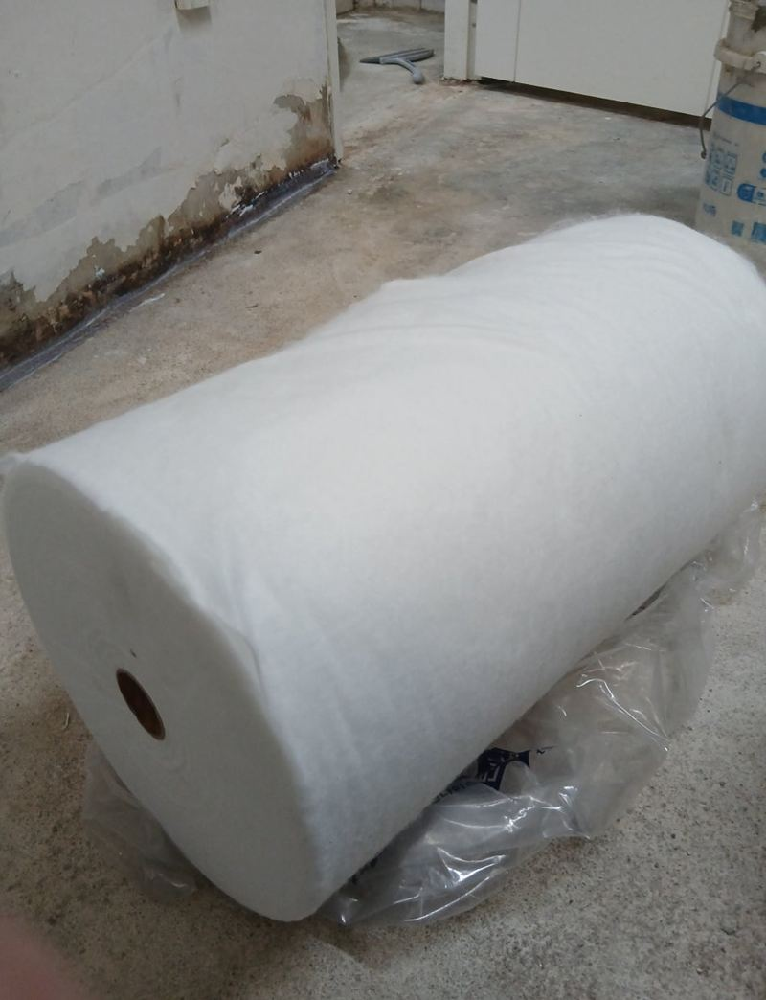

용산 콘크리트 내외벽 균열 방수 페인트 시공 방법
← 밀어서 전후 비교 →
새 세입자가 들어오기 전, 반지하 벽에 올라온 습기와 갈라짐, 곰팡이를 정리하고 싶다는 집주인분 연락이었어요. 벽 아래쪽은 결로 자국이 진하고 머리카락 같은 금이 곳곳에 나 있었어요. 금 간 곳부터 방수크림으로 막고, 그 위를 방수 기능이 있는 페인트로 덮었어요.
| 현장 | 서울 용산 후암동 주택 반지하 방 |
|---|---|
| 증상 | 벽 헤어라인 균열, 결로 자국, 곰팡이 |
| 한 일 | 청소·곰팡이 제거 → 프라이머 → 방수크림 2회 → 모서리 방수포 → 방수 페인트 |
| 목적 | 세입자 입주 전 습기와 곰팡이 재발 줄이기 |
일반 페인트로 덮으면 다시 올라와요
반지하는 바깥 흙과 맞닿은 벽이 많아서, 외벽 방수가 약해지면 땅속 습기가 벽을 타고 들어와요. 이 상태에서 일반 페인트로 덮으면 몇 달 지나 칠이 부풀고 곰팡이가 다시 번져요. 그래서 습기가 들어오는 길인 균열부터 막고, 그 위를 습기에 강한 마감으로 덮는 순서로 갔어요.


균열에 방수크림 두 번
균열 주변 먼지와 곰팡이를 걷어 내고 프라이머를 발라 접착력을 높였어요. 그다음 방수크림을 1차로 바르고 완전히 마른 뒤 2차를 덧발라 두께를 확보했어요. 방수크림은 실리콘이나 퍼티보다 콘크리트 속으로 깊이 스며들어 물길을 막아 줘요. 금이 몰리는 모서리에는 방수포를 한 겹 덧대 이중으로 보호했어요.


방수 페인트는 얇게 여러 번
크림이 완전히 굳은 뒤 벽 전체에 방수 기능이 있는 코팅 페인트를 칠했어요. 두껍게 한 번에 바르면 마르면서 갈라지기 쉬워서, 얇게 펴 바르고 말리기를 반복했어요. 결로가 생기던 벽 아래쪽은 한 번 더 신경 써서 덮었어요.


반지하·지하 벽, 이런 증상이면 연락 주세요
- 벽지가 아래부터 들뜨고 얼룩져요벽 속에 습기가 차 있다는 신호예요.
- 여름마다 곰팡이 냄새가 나요결로와 균열 습기가 겹친 경우가 많아요.
- 벽에 하얀 가루가 피어요콘크리트 속 습기가 빠지며 생기는 백화예요. 습기가 들어오는 길을 막아야 해요.
- 세입자 바뀌기 전 정리하고 싶어요비어 있을 때 작업하면 건조 시간을 충분히 줄 수 있어요.
반지하 방수 질문
바깥쪽 방수까지 해야 완전히 막히나요?
물이 들어오는 근본은 외벽 쪽일 때가 많아요. 안쪽 방수로 많이 줄일 수 있지만, 물이 새는 수준이면 외부 확인도 같이 권해요.
곰팡이 위에 바로 칠해도 되나요?
곰팡이를 그대로 덮으면 다시 번져요. 걷어 내고 말린 뒤 칠해야 해요.
벽지 대신 페인트로 마감해도 괜찮나요?
습한 벽은 벽지보다 방수 페인트 마감이 관리가 쉬워요. 색은 원하시는 걸로 골라요.
사람이 살면서도 작업할 수 있나요?
가능하지만 냄새와 건조 시간 때문에 비어 있을 때가 가장 좋아요.
결로는 완전히 없어지나요?
환기와 난방 습관도 영향을 줘요. 시공 후에도 제습기와 환기를 함께 하시면 훨씬 덜해요.
방수 페인트 위에 벽지를 붙여도 되나요?
습기가 많은 벽이라면 페인트 마감 그대로 쓰시길 권해요. 벽지는 다시 습기를 머금기 쉬워요.
다른 바닥·벽 보수 현장
벽 전체 사진과 금 간 곳, 곰팡이 핀 곳을 가까이 찍어 보내 주세요.
전화 상담 010-4517-9872